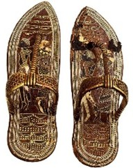
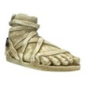
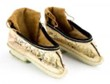

"The First Shoes
The first shoes date back to around 8,000-10,000 BCE,
During the Prehistoric Era, footwear would be made from materials such as animal hides and plants.
These foot coverings would protect their feet from the harsh environments of the time and evidence of this was found in the state of Oregon.
Something like the Otzi, which was known as the Iceman’s shoe that dates back to about 3300 BCE and was found in the Alps. These were made from deerskin uppers,
bearskin soles, and grass insulation, this shows that prehistoric footwear was made for durability and warmth and was the best thing that could be made for protection from the extremely cold climate."
"Now following this model of footwear with time and technological advancement, and ancient civilizations developed so did their footwear,
because as time went on and in different cultures footwear or shoes and their design more or less became a symbol of social status and reflected the
climate and the materials that they had at their disposal. The ancient Egyptians had sandals made from palm leaves, leather or papyrus which were common
materials but the higher status individuals and royalty like pharaohs wore gold plated sandals to distinguish themselves from everyone else, while slaves and low
class citizens were barefoot, showing how shoes/footwear was a symbol a status that only those higher in the social ladder could have. Many civilizations had similar
customs as well, not only using footwear as a status symbol but even the material. The ancient Greeks used leather to create sandals with ankle straps while their soldiers wore
thick-soled boots, and again, shoes represented and were customized to social classes and even professions, and the Romans followed suit. They developed the nail-soled shoes and followed the
tradition of class identification through footwear, as they would be separated by color and material. While in Asia, they had silk embroidered shoes that were only for the wealthy and high status
and, wooden lotus shoes in China, and in India, they had paduka, which were wooden sandals with toe support that were worn by the upper-class individuals and the monks."
